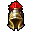

Huldra
A "Huldra" tem ❤15000 de vida e tem defesa 🧊20 🌾20 🔥20 💀50 ⚡20 💡60 e XP de 125.000.
O loot.

Siga o caminho partindo de "/ir feyrist".

Para fazer esse boss você vai precisar gastar 20 pontos de task, e só pode fazer a cada 20 horas.
Home